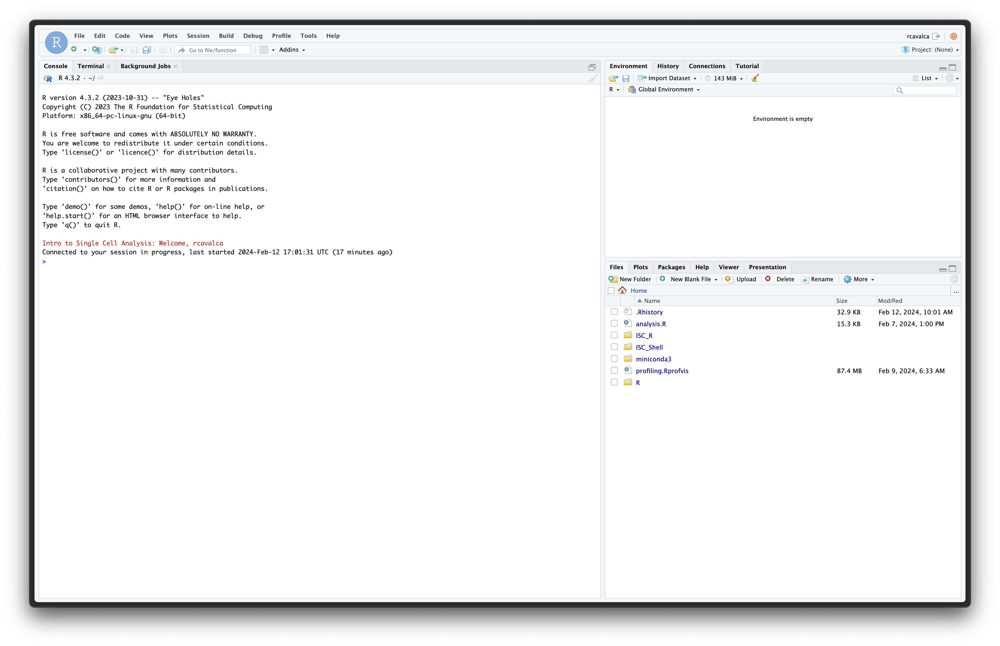

Workflow Overview

Introduction
The field of single-cell expression measurements is still relatively
new
and therefore best practices for analysis and standards for publication
are continuing to evolve.
One of the goals of this workshop is to not only provide an example
of a start to end single-cell workflow but also explore some of the
relatively arbitrary decision points and the rationale for the choices
we included in our analysis.
Objectives
- Orient on RStudio.
- Create RStudio project for analysis.
- Create directory structure for analysis.
- Learn how to read 10X data into Seurat.
- Introduce the Seurat object, and how to access parts of it.
Orienting on RStudio
To orient ourselves on the interface of RStudio, look in the lower
right pane, that has a list of files and folders. Click on the
welcome.R script.
There should now be four panes in your RStudio window, with the
welcome.R script in the upper left pane, this is the
“Source” or “Scripts” pane. It displays the code that we will write to
perform our analysis.
In the Scripts pane, there is a line of icons, towards the right side
of the pane there is a “Run” button. First highlight all the code in the
Source pane, and then click “Run”.
Checkpoint
A number of things just happened in all the panes:
- There is a record of the code that was run along with the results in
the lower left pane. This is the “Console” panel, and here is where the
output of executing code is displayed. You can also type directly in the
prompt and execute code, but it is not saved in the script.
- There is a
phenotypes_by_species object listed in the
upper right pane. This is the “Environment” panel, and it shows all the
existing variables in the session, as well as a brief description.
- There is a plot in the lower right pane where the file structure was
previously listed. This is the “Files / Plots / Help” pane, and it can
show the file browser that we saw at the start, display plots that are
executed in the Console, or display help pages as we’ll see later.
Project setup
To start, we will access our shared RStudio server by opening a web
browser to the following URL:
https://bfx-workshop02.med.umich.edu/
You should now be looking at a page that will allow you to login to
the RStudio server:

Image: Login page for RStudio server.
Enter your user credentials and click Sign In. Your
username and password were provided via email, but if you need help, a
helper can retrieve it for you if you ask in Slack. Once logged in, you
should now see the RStudio interface:

Image: Landing page after successful login to
RStudio server.
Creating a project
We will create an RStudio Project that will help us keep our files
organized. See the Projects
section of R for Data Science for
a more in-depth description of what a project is and how it’s
helpful.
To create a Project for this workshop, click File then
New Project…. In the New Project Wizard window that opens,
select Existing Directory, then Browse…. In the
Choose Directory window, select the ISC_R folder by
clicking it once, and then click the Choose button. Finally,
click Create Project.
Once we do this, RStudio will restart and the Files pane (lower
right) should put us in the ~/ISC_R folder where there is
an inputs/ folder and an ISC_R.Rproj file.
Directory structure
We have included the data to be used in the workshop in the
inputs/ folder. However, the project will need to include
folders for our analysis and our analysis scripts. Let’s create that
directory structure with the dir.create() function.
# Create project directories ----------------------------------------------
dir.create('scripts', showWarnings = FALSE, recursive = TRUE)
dir.create('results/figures', showWarnings = FALSE, recursive = TRUE)
dir.create('results/tables', showWarnings = FALSE, recursive = TRUE)
dir.create('results/rdata', showWarnings = FALSE, recursive = TRUE)
In the Files pane we should see the new results/ and
scripts/ folders.
Analysis script
The two most important artifacts of our analysis are the data from
Cell Ranger, and the script to analyze the data. There will be outputs
in results/, and these will be important, but if the
contents of results/ are ever lost, the script will be able
to re-generate them if we’ve captured all our steps as code, which we
aim to do.
To create the analysis script, click File, hover over
New File, and click on R Script. A new pane in the
upper left slides into view and is the Untitled script file. Save this
file, and name it, by clicking File then Save.
Double click the scripts/ folder, and in the File name:
text box type “analysis.R”. Then click Save.
As we proceed through the workshop, we should save this file (by
clicking the Floppy disk, clicking File then Save,
or by typing Control + S).
Good scripting practices
In any analysis script, we recommend using comments (lines preceded
by a “#”) to provide additional information about code that may not be
self-evident. This is to the benefit of others that may look at the
code, but also to your future-self.
Analysis initialization
We begin our analysis script by loading the libraries we expect to
use. It’s generally good practice to include all library()
calls at the top of a script for visibility.
# Load libraries ----------------------------------------------
library(Seurat)
library(BPCells)
library(tidyverse)
options(future.globals.maxSize = 1e9)
The libraries that we are loading are:
- The
Seurat library, developed by the Satija lab, which will provide the
essential functions used in our single-cell analysis. The Seurat documentation is
extensive and indispensible.
- The
BPCells library, developed by Benjamin
Parks, is a recent package with the primary goal of efficiently
storing single-cell data to reduce its memory footprint. The BPCells
documentation includes many useful tutorials.
- The
tidyverse library, developed by Posit, is an
essential package for data manipulation and plotting. The tidyverse documentation is
essential for getting a handle on the array of functions in the many
packages contained therein.
Create a Seurat object
The most recent release of Seurat, version 5, includes
changes which take advantage of the memory-efficient storage implemented
in BPCells. To read the efficiently stored data with
BPCells we will use the open_matrix_dir()
function.
# Puts the data "on disk" rather than "in memory" -------------
geo_mat = open_matrix_dir(dir = 'inputs/10x_mat_filtered')
This reads in the expression matrix which has genes as rows and cells
as columns. The expression matrix is the precursor to creating the
Seurat object upon which all our analysis will be done. To
create the Seurat object:
# Create seurat object ----------------------------------------------
geo_so = CreateSeuratObject(counts = geo_mat, min.cells = 1, min.features = 50)
geo_so
An object of class Seurat
26489 features across 35216 samples within 1 assay
Active assay: RNA (26489 features, 0 variable features)
1 layer present: counts
We have specified some parameters to remove genes and cells which do
not contain very much information. Specifically a gene is removed if it
is expressed in 1 or fewer cells, and a cell is removed if it contains
reads for 50 or fewer genes. In the context of this workshop, this helps
us minimize memory usage.
Reading in data from scratch
Above, we’ve demonstrated how to read data that was already arranged
in the BPCells manner. We have done this for the workshop
to reduce our memory footprint from the start, but when you get data
back from AGC, you will have to follow the steps below.
# To load data from raw files ----------------------------------------------
### DO NOT RUN ###
# Collect the directories containing the 3 files:
# barcodes.tsv.gz, features.tsv.gz, matrix.mtx.gz
# The [-1] drops the parent directory inputs/10x_analysis
sample_dirs = list.dirs('inputs/10x_analysis')[-1]
# Extract the sample names. NOTE, this will differ depending
# on the form the folder names take, this works for this data.
# We create a named vector
samples = str_split(basename(sample_dirs), pattern = '_', simplify = TRUE)[,2]
# Naming the sample_dirs vector makes Seurat name the
# samples in the corresponding manner, which is nice for us.
names(sample_dirs) = samples
# Create the expression matrix
geo_mat = Read10X(data.dir = sample_dirs)
This will generate the expression matrix that is the input to
CreateSeuratObject(), as above. If you wanted to write this
expression matrix using BPCells so that it could be used in
the more memory-efficient manner, you would do:
write_matrix_dir(mat = geo_mat, dir = 'inputs/10x_mat_filtered')
You’d then have the items needed to run the code we’ve already run.
Structure of a Seurat object
The Seurat object is a complex data type, so let’s get a
birds eye view with an image from this
tutorial on single-cell analysis.

Image: Schematic of Seurat
object.
The three main “slots” in the object are:
- The
assays slot stores the expression data as
Assay objects.
- The
meta.data slot which stores cell-level information,
including technical and phenotypic data.
- The
reductions slot stores the results of dimension
reduction applied to the assays.
There are other slots which store information that becomes relevant
as we progress through the analysis. We will highlight the other slots
as they come up.
After reading the data in and creating the Seurat object above, we
can imagine the following schematic representing our object:

Image: Schematic after creating the Seurat
object.
Note the RNA assay contains a count layer consisting of
a raw count matrix where the rows are genes (features, more
generically), and the columns are all cells across all samples. Note
also the presence of a meta.data table giving information
about each cell. We’ll pay close attention to this as we proceed. The
other slots include information about the active.assay and
active.ident which tell Seurat which expression data to use
and how the cells are to be identified.
Accessing parts of the object
The only slot of the Seurat object that we’ll typically
access or modify by hand–that is, without a function from the
Seurat package–is the meta.data object. In R,
slots are accessed with the @ symbol, as in:
# Examine Seurat object ----------------------------------------------
head(geo_so@meta.data)
orig.ident nCount_RNA nFeature_RNA
HODay0replicate1_AAACCTGAGAGAACAG-1 HODay0replicate1 10234 3226
HODay0replicate1_AAACCTGGTCATGCAT-1 HODay0replicate1 3158 1499
HODay0replicate1_AAACCTGTCAGAGCTT-1 HODay0replicate1 13464 4102
HODay0replicate1_AAACGGGAGAGACTTA-1 HODay0replicate1 577 346
HODay0replicate1_AAACGGGAGGCCCGTT-1 HODay0replicate1 1189 629
HODay0replicate1_AAACGGGCAACTGGCC-1 HODay0replicate1 7726 2602
Here, each row is a cell, and each column is information about that
cell. The rows of the table are named according to the uniquely
identifiable name for the cell. In this case, the day and replicate, as
well as the barcode for that cell. As we continue the workshop, we will
check in on the meta.data slot and observe changes we want
to make, and that other functions will make. We’ll also observe the
other assays and layers and note their changes.
Save our progress
Let’s Save our progress as an RDS file with saveRDS();
this allows us to have a copy of the object that we can read back into
our session with the readRDS() commmand. Periodically we
will be saving our Seurat object so that we can have a version of it at
different steps of the analysis. These will also help us get untangled
if we get into an odd state.
# Save the Seurat object ----------------------------------------------
saveRDS(geo_so, file = 'results/rdata/geo_so_unfiltered.rds')
Summary
In this section we:
- Created an RStudio project for analysis.
- Created the directory structure for analysis.
- Learned how to read 10X data into Seurat.
- Introduced the Seurat object, and how to access parts of it.
These materials have been adapted and extended from materials listed
above. These are open access materials distributed under the terms of
the Creative
Commons Attribution license (CC BY 4.0), which permits unrestricted
use, distribution, and reproduction in any medium, provided the original
author and source are credited.
